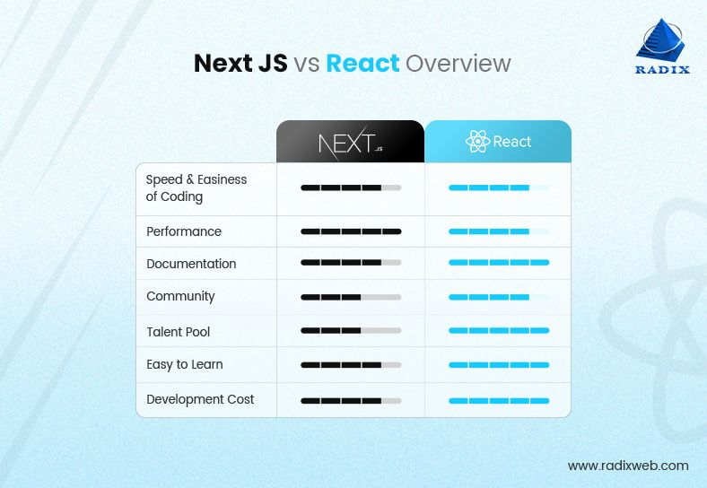

WHY NextJS OVERTOOK ReactJS?? A COMPARATIVE OVERVIEW NextJS ReactJS
What a developer needs?? EASE DEFINITELY!!.. that's why NextJS became top choice for developers.
- Click on NextJS and ReactJS on navigation bar to dive deep into details
- ReactJS>Open Source Library>modularity>Good for complex routing and heavy data driven webs>CSR
- NextJS>Framework>less code required>easy configuration>Better Performance>SSR

© www.radixweb.com